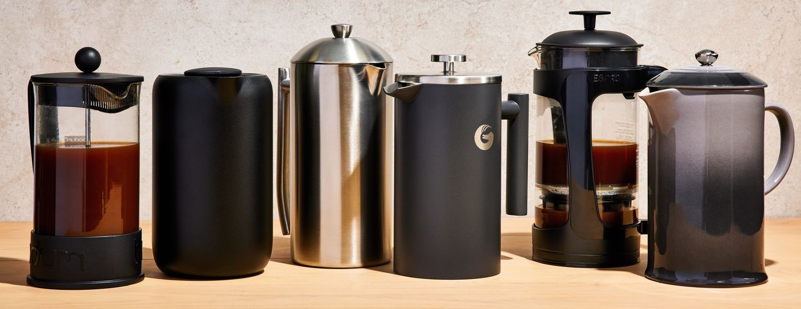

The French Press

French press coffee is dense and heavy, yet it has its own sort of elegance.
As with any method, the devil is in the details: To achieve a full expression of the coffee, decant it immediately after brewing so it doesn’t become bitter or chalky.
Then, sink into this rich and heady cup. It only takes four minutes to brew.
Learn how to brew
Back to homepage